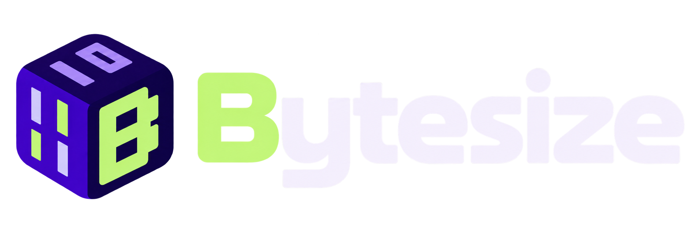

Binary data to a bitmap
Draw the image represented by these rows. Click or tap each pixel to cycle through the colours. Use Enter or Space on a focused pixel.

Practise binary arithmetic, number-base conversions and units of information.
This site is in no way affiliated with BBC Bitesize.
Start at the right. 1 + 1 = 10: write 0 and carry 1. 1 + 1 + 1 = 11: write 1 and carry 1. Add any carry in the next column. Enter all 8 answer bits from right to left, including leading zeros.
Move each bit, then fill empty places with 0. A logical shift left by 1 doubles a number (×2). A logical shift right by 1 halves it (÷2) when it divides exactly. Each extra place doubles or halves again. Practise shifts of up to 6 places; every answer fits in 8 bits and uses a whole number.
Logical shifts only · 8 bits · whole-number results
Start with a conversion, then follow a changing mix of number tasks. Choose an optional ASCII or bitmap finish.
Apply character tables, calculate code sequences and explain encoding choices.
Count consecutive runs to encode binary data, then decode count/value pairs to rebuild it.
Count first, value second. For example, 00011 becomes (3, 0) (2, 1). Combine only adjacent identical values.
Look at the image, count its pixels and work out how many bits it uses.
Each coloured square is one pixel. Count across for the width and down for the height.
Colours in this image
Each group gives the binary value for one pixel in the same position as the image above. The digits per group show the colour depth.
File-size comparisons and binary pixel patterns
For file-size calculations, use width × height × colour depth. Ignore compression and metadata.
Read each row from left to right, starting at the top. Use the colour key for each question.
Draw the image represented by these rows. Click or tap each pixel to cycle through the colours. Use Enter or Space on a focused pixel.
Write the binary data for each row of this image. Spaces between pixels are optional.
Mix questions on units, number bases, binary arithmetic, images, sound, compression and ASCII. Every number-base question stays within 0–255.
Explore how a continuous sound signal becomes digital data, then practise sampling and file-size calculations.
Change one setting at a time and watch what happens.
This graph shows the first 2 milliseconds (0.002 seconds). It stays the same width when duration changes. The points show stored values, not a reconstructed sound wave.
File size (bits) = sampling rate × sample resolution × duration
All calculations use one channel (mono), uncompressed data and no file header or metadata. 8 bits = 1 byte.
Definitions, sample diagrams, calculations and changing recording settings.
Use file size (bits) = rate × resolution × seconds. All recordings are mono and uncompressed; ignore headers and metadata. Give numbers only in answer boxes. Decimals are allowed where needed.
Explain compression, follow Huffman trees and calculate the bits saved.
Each new assessment changes the scenarios, trees and data. Printing produces a blank worksheet for the current questions.